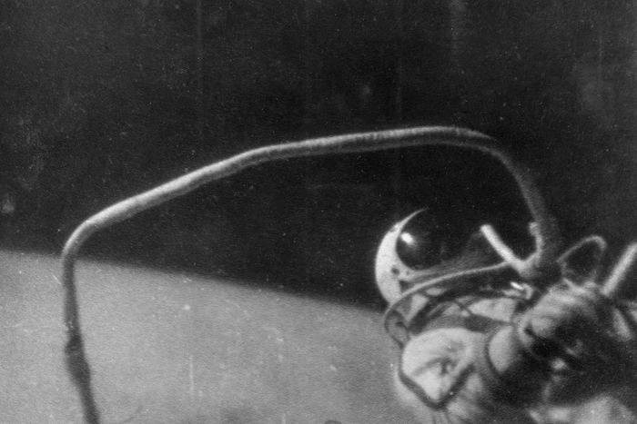

История космонавтики



Следующим важным этапом проверки человеческих способностей и научно-технических достижений СССР был выход человека в открытый космос. Первый выход осуществил лётчик-космонавт Алексей Леонов 12 марта 1965 г. с корабля «Восход-2», который пилотировал Павел Беляев. Время нахождения космонавта вне корабля составило 12 минут 9 секунд, общее время, вместе с нахождением в специализированном разгерметизированном шлюзе, 23 минуты 41 секунду. Всё происходящее снималось и транслировалось на Земле. Леонов несколько раз удалялся и возвращался к кораблю, приветственно махал рукой перед камерой. К скафандру был прикреплен специальный страховочный фал, в котором находились стальной трос, провода для связи и аварийное снабжение кислородом. Выход осуществлялся в скафандре «мягкого» типа «Беркут», который в процессе стал жестким, раздулся и помешал Леонову в штатном режиме вернуться на корабль, удалось это сделать только после рискованного снижения им давления кислорода. В Центре управления полётами об этом никто даже не догадывался, поскольку в экстренной ситуации Леонов самостоятельно принял решение и оказался прав. Вопреки инструкции входить Леонову пришлось вперед головой, а не ногами, и только уже внутри шлюза он развернулся, чтобы закрыть за собой люк. Каждое усилие давалось с огромным трудом, по воспоминаниям первопроходца всё лицо его заливало потом. Этот опыт, едва не стоивший Леонову жизни, подтолкнул к созданию нового скафандра «Ястреб». По возвращению на Землю Леонов заслуженно был удостоен звания Героя Советского Союза.
Помимо огромного символического значения у этой сложной операции были и практические задачи – необходимо было проверить как поведет себя человеческий организм в условиях безвоздушного пространства на случай выхода на поверхность крупного космического объекта, в частности Луны. В это время и в СССР, и в США активно разрабатывалась лунная программа, страны старались опередить друг друга в освоении спутника Земли.

Всего Алексей Леонов (1934 – 2019 гг.) совершил два космических полёта – свой знаменитый полёт 18 — 19 марта 1965 г., на корабле Восход-2 и 15 — 21 июля 1975 г., на корабле Союз-19. Во время второй экспедиции он участвовал в знаменитой стыковке двух аппаратов «Союз» (СССР) и «Аполлон» (США), символизировавших начало сотрудничества двух сверхдержав в космосе и постепенную разрядку в Холодной войне на Земле.


25 июля 1984 г. произошел и первый выход женщины в открытый космос, ею стала также наша соотечественница Светлана Савицкая, которая осуществила выход с борта орбитальной космической станции «Салют-7».